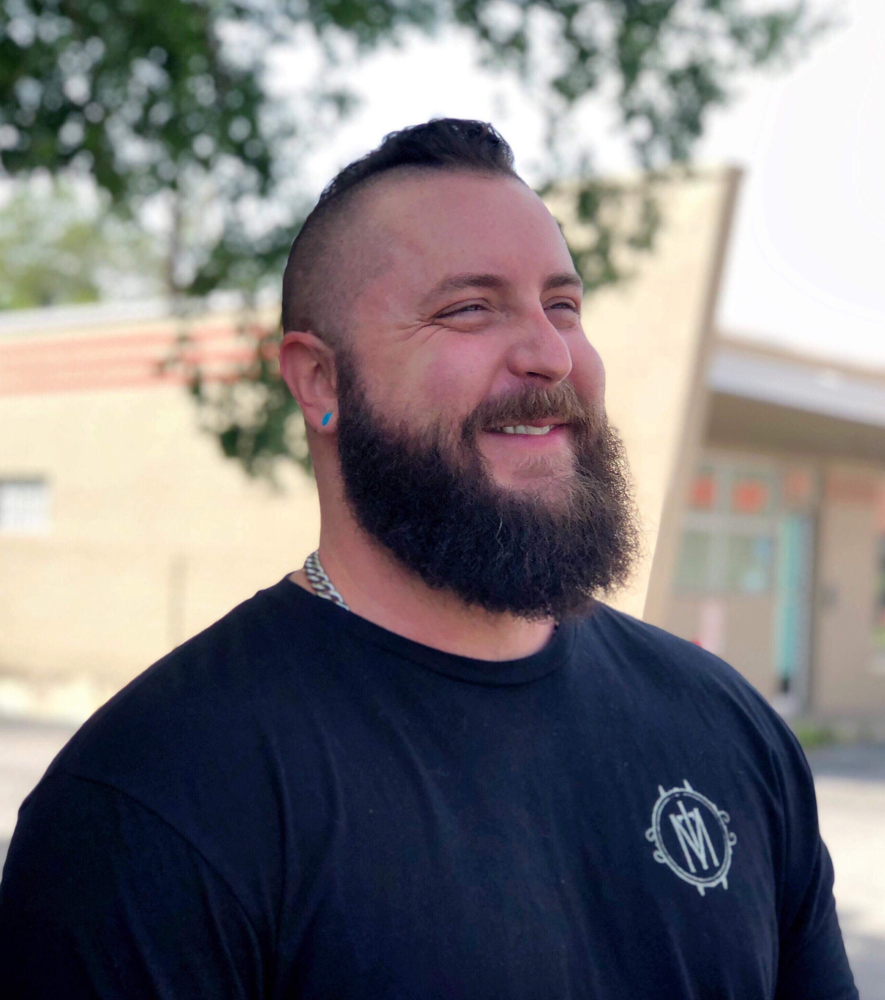
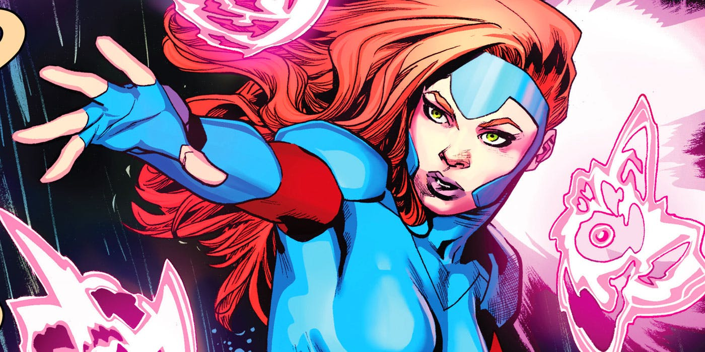

Steve Nepote
Full Stack Developer

Artist and Web Developer with an extensive background in Emergency Management and Public Safety. A passion for helping others create, develop and bring their ideas into reality. I have a varied experience dealing with anything personal changes to literal crisis in an extreme, fast paced-environment and am always interested in learning new things and expanding my scope of practice. I love the challenge of solving new problems and strive to find creative and efficient solutions.